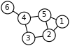

graph

Definition: In discrete mathematics, and more specifically in graph theory, a graph is a structure amounting to a set of objects in which some pairs of the objects are in some sense "related". The objects correspond to mathematical abstractions called vertices (also called nodes or points) and each of the related pairs of vertices is called an edge (also called link or line). Typically, a graph is depicted in diagrammatic form as a set of dots or circles for the vertices, joined by lines or curves for the edges. Graphs are one of the objects of study in discrete mathematics.
Source: Wikipedia
Wikipedia Page (Something wrong with this association? Let us know.)
Wikidata Page (Something wrong with this association? Let us know.)
Occurs in: